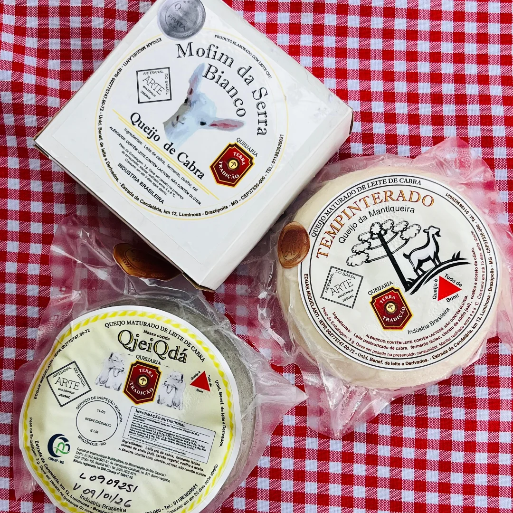
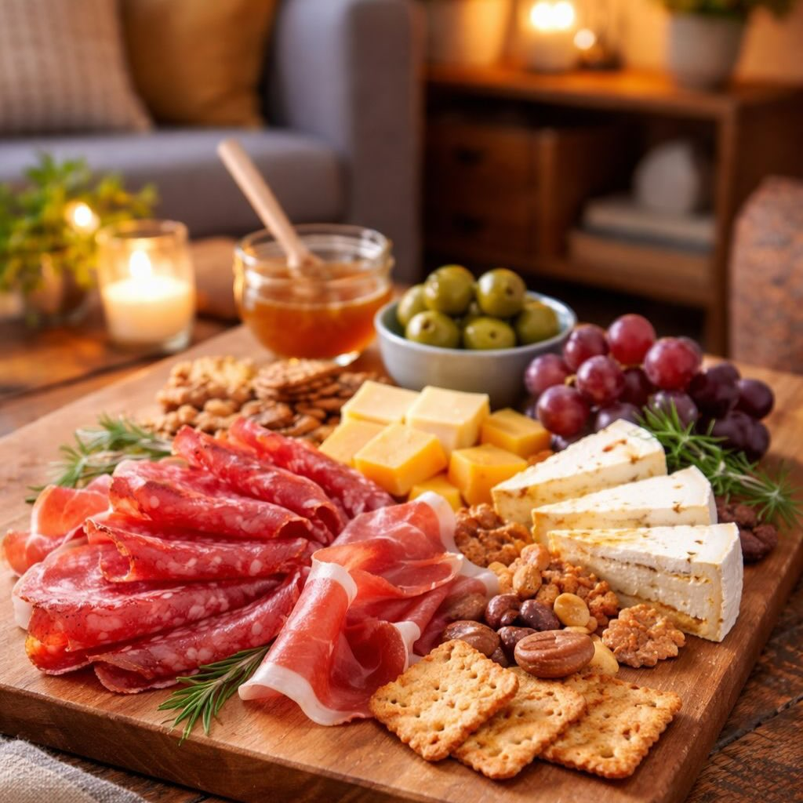
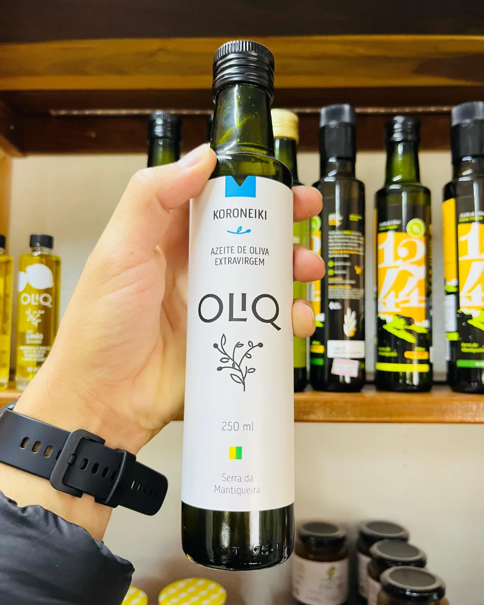
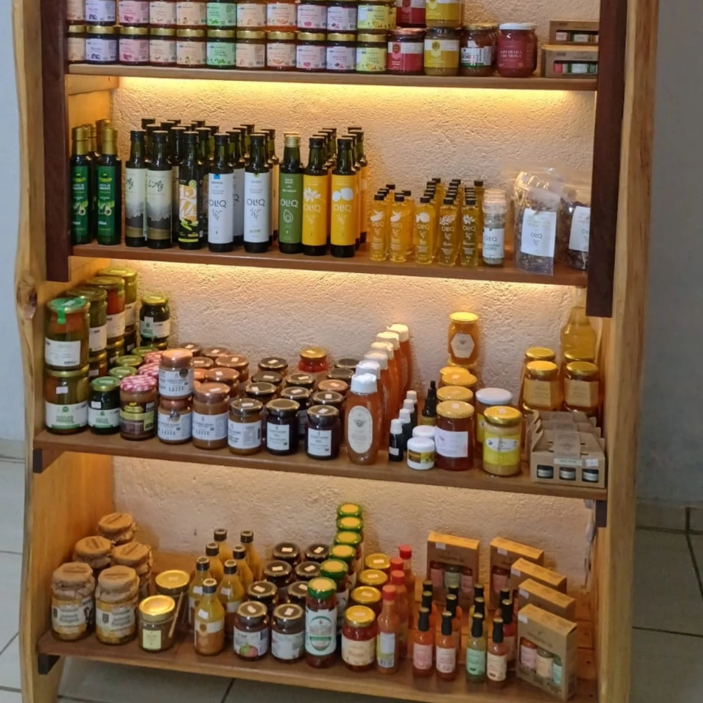
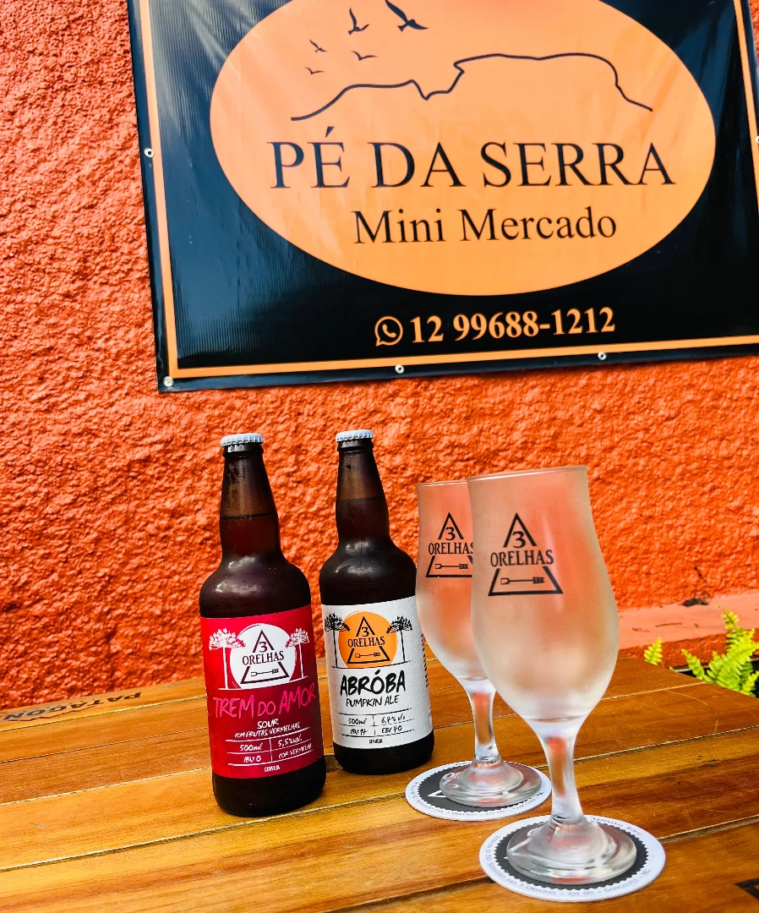

Queijos regionais
Para a mesa, o lanche ou uma nova combinação. Conheça os queijos da região e escolha entre as opções disponíveis.
Pé da Serra• Produtos regionais
Entre tantos produtos e rótulos novos, escolher fica mais fácil com uma boa conversa. No Pé da Serra, você encontra queijos, vinhos, azeites, geleias e cervejas artesanais da região, com atendimento próximo para conhecer as opções e decidir o que levar.
Consulte os produtos disponíveis e planeje sua visita à loja.

Às vezes, a embalagem chama atenção, mas ainda falta saber mais sobre o produto. Você quer escolher algo que tenha a ver com o seu gosto, com a refeição que está planejando ou com a pessoa que vai receber uma lembrança da viagem.
No Pé da Serra, você pode perguntar, conhecer as opções da loja e decidir com mais informação.
Conheça algumas das categorias que fazem parte da nossa loja. Fale com a equipe para consultar rótulos, opções e disponibilidade.

Para a mesa, o lanche ou uma nova combinação. Conheça os queijos da região e escolha entre as opções disponíveis.
Rótulos da região para você conhecer. Conte quais vinhos costuma escolher e converse com a equipe sobre as opções da loja.

Produtos de produtores da região para descobrir e levar à cozinha. Consulte os rótulos disponíveis.

Para acompanhar o café da manhã, compor a mesa ou levar como lembrança. Pergunte pelos sabores disponíveis.

Conheça cervejas de produtores locais e consulte os estilos e rótulos que temos na loja.
Disponibilidade sujeita ao estoque da loja. Bebidas alcoólicas para maiores de 18 anos. Aprecie com moderação.
O Pé da Serra nasceu da trajetória de trabalho no campo e cresceu com a chegada de quem vive e de quem visita a região. Ao longo desse caminho, os produtos regionais ganharam espaço na loja.
Hoje, nossa proposta é receber você de perto: entender o que procura, apresentar os produtos e compartilhar informações que ajudem na escolha. Seja para levar algo à mesa ou descobrir um sabor durante a viagem, a conversa faz parte do atendimento.
Está visitando a região ou mora por aqui? Venha conhecer os produtos da loja. Confira a localização e os horários abaixo para organizar sua visita. Se estiver procurando um item específico, consulte a disponibilidade pelo WhatsApp antes de sair.
Rod. Pref. Benedicto Gomes de Souza, São Bento do Sapucaí - SP, 12490-000
Todos os dias, das 7h às 19h
Você encontra produtos regionais como queijos, vinhos, azeites, geleias e cervejas artesanais. As opções variam conforme o estoque. Nossa equipe pode informar o que está disponível.
Sim. Pelo WhatsApp, você pode consultar produtos e pedir informações sobre horário e localização para planejar a visita.
Sim. Conte o que procura e o que gosta. Nossa equipe apresenta as opções da loja e as informações dos produtos para ajudar você a decidir.
Você pode conhecer as opções da loja e escolher de acordo com o gosto de quem vai receber. Consulte também as orientações de conservação e transporte de cada produto.
Fale com a equipe pelo WhatsApp ou consulte na loja. Informe qual produto chamou sua atenção para receber as informações das opções disponíveis.
Se ainda está na dúvida, vamos conversar. Conte o que você procura e conheça as opções do Pé da Serra para a sua próxima visita.
Falar com o Pé da Serra